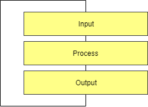
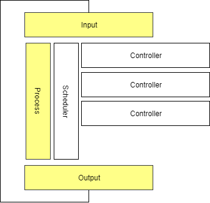
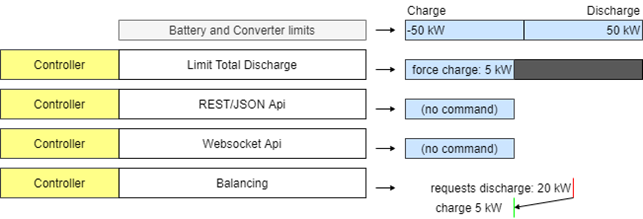
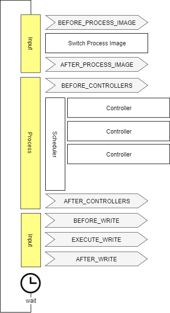
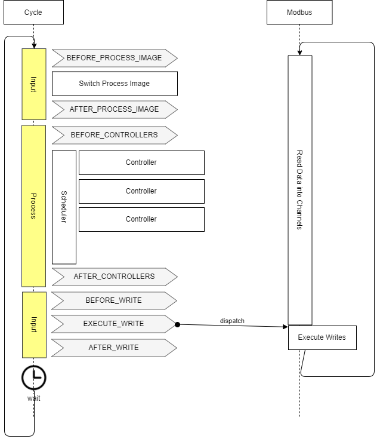
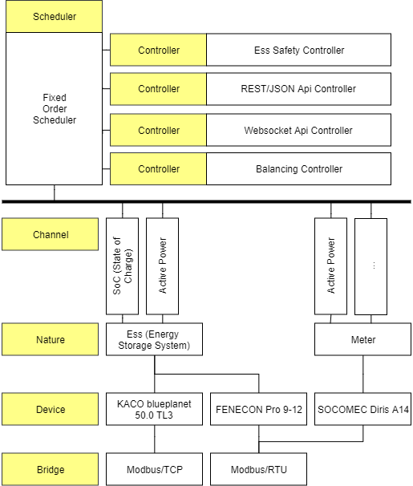

Edge Architecture
OpenEMS is a modular platform for energy management applications. It was developed around the requirements of controlling, monitoring and integrating energy storage systems together with renewable energy sources and complementary devices and services.
The OpenEMS Edge software architecture is carefully designed to abstract device communication and control algorithms in a way to provide maximum flexibility, predictability and stability, while simplifying the process of implementing new components.
1. High-Level programming language
OpenEMS Edge and Backend are implemented in the Java programming language and requires a Java Runtime Environment (JRE). This allows convenient development on a personal laptop on any operating system. For productive use, the software typically runs on an Industrial IoT Gateway or a development board like a Raspberry Pi with GNU/Linux Operating System.
The usage of a high-level programming language for an EMS leads to a trade-off between easy and efficient software development and loss of hard real-time capabilities.
An Energy Management System collects input data, like measured grid power and state of charge of a battery, and processes it with its control algorithms to derive setpoints which are sent to the hardware devices. (see "Input-Process-Output" below).
The possible and feasible speed of this execution cycle depends on the performance of the connected devices and the communication paths. It also means that the EMS has to deal with multi-threading, asynchronous communication and latencies.
Example:
-
A power smoothing algorithm needs to process the current output power of a photovoltaics system. Most external power meters provide measurements approximately only once every second. In this scenario it is not feasible to run the execution cycle more often than once every second.
-
For control algorithms that require high-performance and minimum delay between measurement and action, e.g. providing Virtual Inertia Ancillary Services, the EMS cycle duration is not sufficient and soft real-time behaviour is not suitable. The same point applies for critical safety measures like fire extinguishing and disaster control measures."
-
Due to the asynchronous communication, new data can arrive at every moment, e.g. the value for active power received by the meter can change at any time between the operation of two consecutive lines of code. The EMS needs to provide measures to avoid errors arising from this multi-threading.
2. Input-Process-Output
OpenEMS Edge is built around the well-known IPO (input-process-output) model which defines the internal execution cycle.

- Input
-
During the input phase all relevant information - e.g. the current 'state of charge' of a battery - is collected and provided as a process image. This process image is guaranteed to never change during the cycle.
- Process
-
The process phase runs algorithms and tasks based on the process image - e.g. an algorithm uses the 'state of charge' information to evaluate whether a digital output should be turned on.
- Output
-
The output phase takes the results from the process phase and applies it - e.g. it turns the digital output on or off.
3. Controller
Controllers are consumers of Channel data and hold the actual business logic, e.g. the control algorithm that evaluates input data and defines setpoints for the controlled hardware.
Examples for controllers are:
-
Controller.Ess.LimitTotalDischargemaintains a minimum battery level -
Controller.Backend.Apiconnects to the OpenEMS Backend server -
Controller.Rest.Apiprovides a JSON/REST-Api for external access -
Controller.Debug.Loglogs regular system status messages to the standard output -
Controller.Ess.PeakShavingcharges or discharges an ESS in order to cut power peaks at the PCC -
Controller.Ess.Balancingcharges or discharges an ESS in order to optimize self-consumption from a local photovoltaics system.
Ideally controller implementations follow the KISS (Keep It Simple Stupid) principle, which means that they carry out only one specific, encapsulated task.
This approach allows very flexible system architectures and avoids duplicated code.
For example, both Ess.PeakShaving and Ess.Balancing controllers do not need to repeat any logic for keeping the battery at a safe state, as this is what the Ess.LimitTotalDischarge controller is responsible for.
As can be seen above, controllers are not necessarily restricted to control algorithms. Even northbound connections to a backend server or SCADA system and alike are implemented as Controllers. This assures for any setpoint request by an external system being embedded in the local prioritization system and naturally restricted by higher-priority controllers.
Example: An external request to discharge the battery will be limited by the Ess.LimitTotalDischarge controller just like any other internal control algorithm.
Controllers are executed regularly e.g. once per second (see "Cycle" below).
4. Scheduler
During the 'process' phase different algorithms (Controllers) might try to access the same resources - e.g. two Controllers try to switch the same digital output. It is therefore necessary to prioritize their execution and restrict access according to priority. OpenEMS Edge uses Scheduler implementations to receive a sorted list of Controllers. The Controllers are then executed in order. Later executed Controllers are not allowed to overwrite a previously written result.

Example:
In the example of energy storage system, the following figure shows, how the interval of possible solutions is reduced by sequentially executed Controllers.
In the example the initial ESS limits from battery and converter allow charging and discharging with 50 kW.
The 'Limit Total Discharge' controller then adds a constraint to force charge the ESS, i.e. enforcing a setpoint that is smaller than -5 kW.
No further limitations are applied by the Api controllers.
The 'Balancing' controller then requests discharging the ESS with 20 kW but is forced to fulfil the constraints.
Eventually the ESS gets force-charged with 5 kW.
The scheduler in OpenEMS Edge handles this prioritization and sequential execution of controllers.
In the example of controlling an ESS, a separate Ess.Power component synchronizes with the IPO cycle and manages feasible solutions via a linear equation system that allows constraints on three-phase or single-phase setpoints for active and reactive power.
It is also used for optimizing distribution of setpoints in the case of multiple ESS.

5. Cycle
The input-process-output model in OpenEMS Edge is executed in a Cycle - implemented by the Cycle component . It handles the setting of a process image in the input phase and executes the Controllers in the process phase. Furthermore it emits Cycle Events that can be used in other Components to synchronize with the Cycle.

6. Process Image
Due to asynchronous communication with external devices and services, data can potentially be updated or invalidated at any point in time. This could lead to confusing situations, e.g. where a Channel value changes between two consecutive controllers that act on its data. To avoid these situations and relieve the programmer from taking care of all kinds of concurrency problems, OpenEMS uses a "Process Image", a technique well proven in the field of PLC programming. The idea is to untie the producers and consumers of data and introducing a central buffer for all channel data. This buffer - the Process Image - is updated only once in every computing cycle when it activates the latest data in each Channel.
Therefore, the implementation of channel objects in OpenEMS has two data variables:
-
The
valuefield keeping the currently active value that should be used by consumers -
The
nextValuefield representing the latest data that was received, e.g. via Modbus communication.
At — and only at — 'Switch Process Image' of the Cycle, the nextValue gets copied to the value field.
This assures, that the data in the Process Image does not change during a computing Cycle.
7. Asynchronous threads and Cycle synchronization
Communication with external hardware and services needs to be executed in asynchronous threads to not block the system. At the same time, those threads need to synchronize with the Cycle.
The following example shows, how the Modbus implementation uses Cycle Events to synchronize with the Cycle:

8. Architecture scheme
The OpenEMS Edge software architecture is carefully designed to abstract device communication and control algorithms in a way to provide maximum flexibility, predictability and stability while simplifying the process of implementing new components.
The following scheme shows the abstraction of hardware via Channels, Natures and Devices as well as the execution of control algorithms via Scheduler and Controllers.

9. Nature
Physical hardware is abstracted in OpenEMS Edge using Natures. A Nature defines a set of characteristics and attributes which need to be provided by each OpenEMS component that implements it. These characteristics are defined by Channels. For example an implementation of an Ess (Energy Storage System), needs to provide an Soc-Channel (State of charge of the battery).
Technically Natures are implemented as OSGi API Bundles.
Each .api bundle contains the nature interfaces that device implementations must implement. For example, io.openems.edge.ess.api defines interfaces like SymmetricEss, AsymmetricEss, ManagedSymmetricEss, etc.
OpenEMS Edge provides the following types of Natures:
9.1. Device Natures
e.g.:
-
io.openems.edge.battery.api - Battery interfaces
-
io.openems.edge.batteryinverter.api - Battery inverter interfaces
-
io.openems.edge.ess.api - Energy Storage System interfaces
-
io.openems.edge.evcs.api - EV Charging Station interfaces (deprecated)
-
io.openems.edge.evse.api - EV Supply Equipment interfaces
-
io.openems.edge.meter.api - Power meter interfaces
-
io.openems.edge.pvinverter.api - PV inverter interfaces
-
io.openems.edge.io.api - IO device interfaces
-
io.openems.edge.heat.api - Heat pump interfaces
-
io.openems.edge.thermometer.api - Thermometer interfaces
9.2. Service/Support Natures
e.g.:
-
io.openems.edge.controller.api - Controller interfaces
-
io.openems.edge.scheduler.api - Scheduler interfaces
-
io.openems.edge.timedata.api - Time-series data interfaces
-
io.openems.edge.timeofusetariff.api - Dynamic pricing interfaces
-
io.openems.edge.predictor.api - Forecasting interfaces
-
io.openems.edge.weather.api - Weather service interfaces
-
io.openems.edge.energy.api - Energy management interfaces